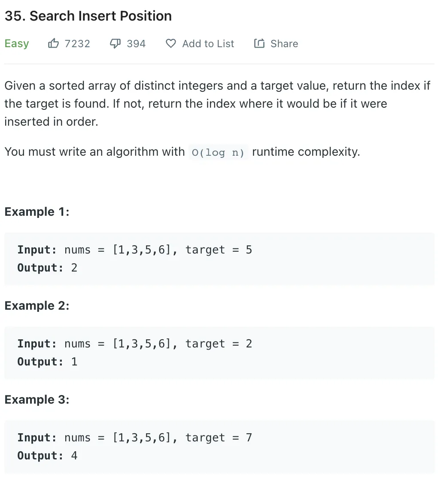
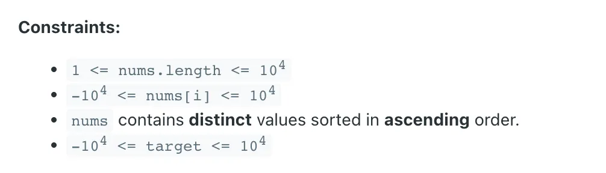

35. Search Insert Position
考過的公司：tiktok
Question


✍🏽 My Solution
Runtime: 0 ms, faster than 100.00% of Java online submissions for Search Insert Position. Memory Usage: 43.4 MB, less than 59.98% of Java online submissions for Search Insert Position.
class Solution {
public int searchInsert(int[] nums, int target) {
int low = 0;
int high = nums.length-1;
while (low <= high) {
int mid = low+(high-low)/2;
if (nums[mid] == target) {
return mid;
} else if (nums[mid] > target) {
high = mid - 1;
} else {
low = mid + 1;
}
}
return low;
}
}
🧠 Thought Process
- Why did I choose this particular implementation?
- 二分查找，不太懂為什麼可以返回low，可以參考王爭解法
- What is the time/space complexity of my solution? How do I know?
- time: O(log n)
- space: O(1)
- What mistakes did I make?
- 越界Ｒ
Solution #1 [王爭：找第一個大於等於target的位置]
Runtime: 0 ms, faster than 100.00% of Java online submissions for Search Insert Position. Memory Usage: 43.5 MB, less than 45.11% of Java online submissions for Search Insert Position.
class Solution {
// 找第一個大於等於target的值
public int searchInsert(int[] nums, int target) {
int n = nums.length;
int low = 0;
int high = n-1;
while (low <= high) {
int mid = low+(high-low)/2;
if (nums[mid] >= target) {
if (mid == 0 || nums[mid-1] < target) {
return mid;
}
else {
high = mid - 1;
}
} else {
low = mid + 1;
}
}
return n;
}
}